1. Ocultar la identidad
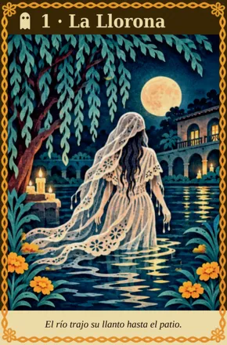
El ánima conserva en secreto su identidad. La carta indica las tres evidencias que puede dejar.
Identidades, evidencias y acciones que dan sentido al arte de las cartas.
Una persona interpreta al ánima y de una a cuatro investigan lo que sucede en la casona durante la noche de Día de Muertos.

El ánima conserva en secreto su identidad. La carta indica las tres evidencias que puede dejar.
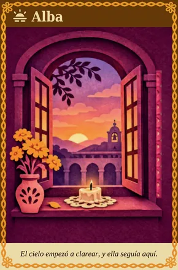
Va boca arriba debajo del mazo de investigadores: cuando solo queda ella, termina la noche.

Busca Bajo cero; detecta con 4 o más. Cuesta 1 de cordura.

Cuando la herramienta confirma una evidencia, el ánima entrega la carta correspondiente.
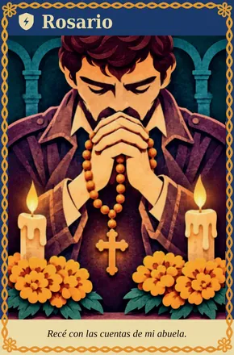
Reacción: cancela una cacería contra ti.
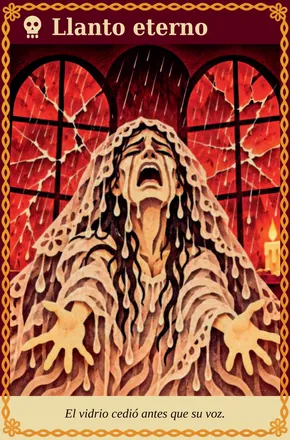
El Espanto pertenece a una identidad concreta. La Llorona tiene Llanto eterno.
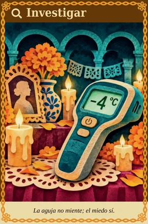
Los investigadores reúnen las pistas y acusan a un ánima. Tienen una sola oportunidad para identificarla.
La cara identifica la acción o el personaje. El reverso permite distinguir el mazo. En roles y espíritus, la muestra frontal corresponde al arte aprobado sin marco.
Busca una evidencia mediante una tirada.
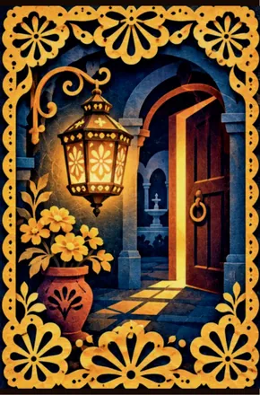
Ayuda a recuperar recursos durante la investigación.
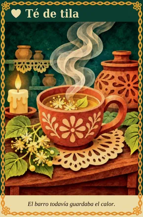
Interviene en el momento de un ataque.
Altera las condiciones de la investigación.
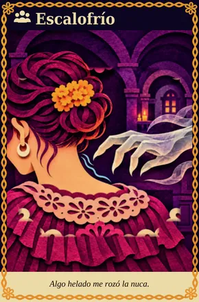

Vincula un poder del ánima con una evidencia.
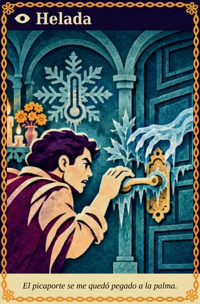
Produce un efecto propio y puede pertenecer a cualquiera de los dos mazos.
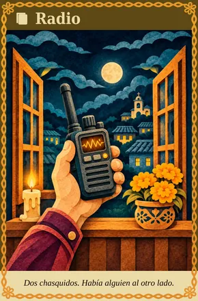
Define al ánima y sus tres evidencias.

Contiene el ataque propio de esa identidad.
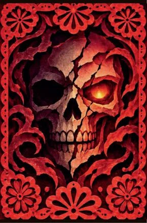
Registra una señal confirmada.

Otorga una facultad al investigador.
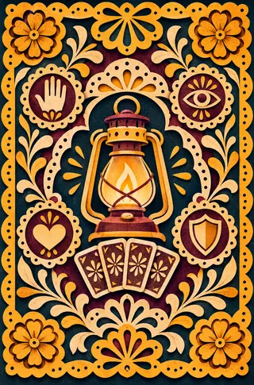
Permite a un espíritu intervenir en la partida.

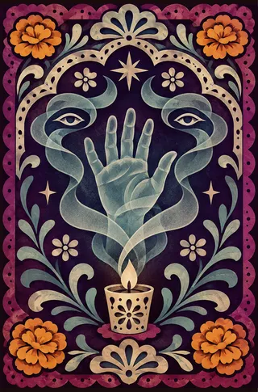
Ayuda a interpretar los pictogramas.
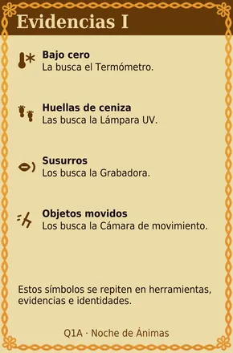
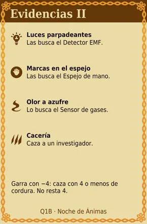
Resume procedimientos en la mesa.

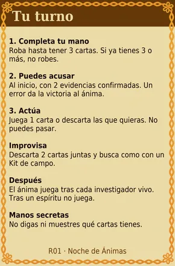
Cada señal tiene una herramienta asociada.
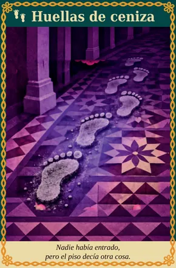

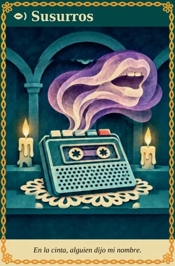
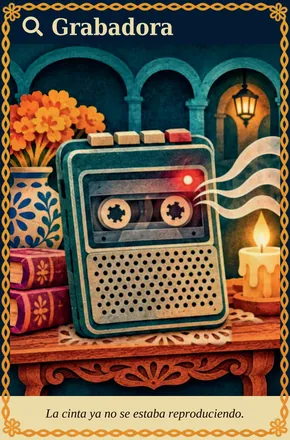
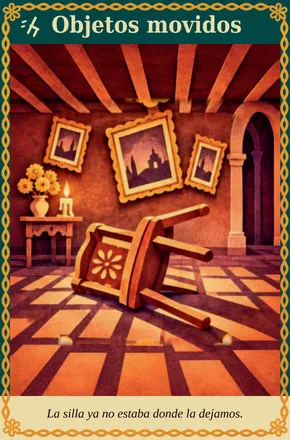
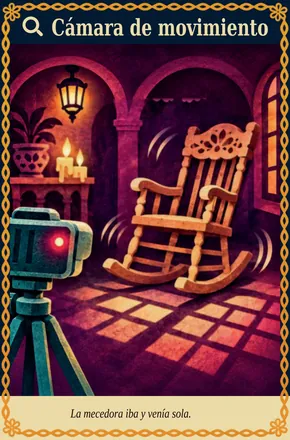

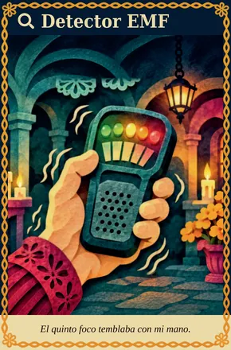

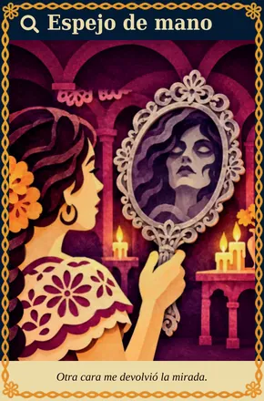


Cada ficha reúne la identidad, sus tres evidencias, el efecto de su Espanto y la leyenda impresa en el frente de la carta.
Bajo ceroSusurrosMarcas en el espejo
Llanto eterno. Todos pierden 3 de cordura; después, cacería a todos con 4 o menos
El río trajo su llanto hasta el patio.
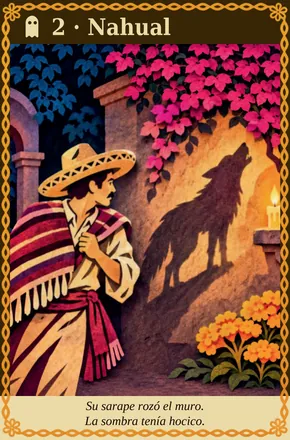

Huellas de cenizaObjetos movidosOlor a azufre
La bestia. Cacería a todos con 6 o menos
Su sarape rozó el muro. La sombra tenía hocico.

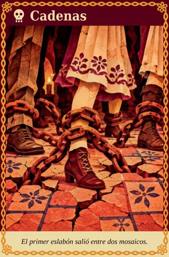
Huellas de cenizaSusurrosLuces parpadeantes
Penitencia. Cada investigador descarta un Rosario; quien no tenga, pierde 3 de cordura; después, cacería a todos con 4 o menos
Traía una vela. La mecha estaba fría.


SusurrosLuces parpadeantesOlor a azufre
Infierno. Cacería a todos con 5 o menos; el Copal no salva a nadie
Bajo el último peldaño parpadearon dos brasas.


Bajo ceroObjetos movidosLuces parpadeantes
Aparición final. Cacería a todos con 4 o menos; solo sirve el Rosario
Reconocí el sombrero antes que la cara.

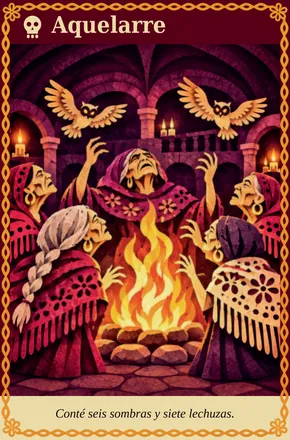
Objetos movidosMarcas en el espejoOlor a azufre
Aquelarre. El ánima elige a un investigador: pierde 4 de cordura; después, cacería a todos con 5 o menos
El ojo de venado giró en su cordón.

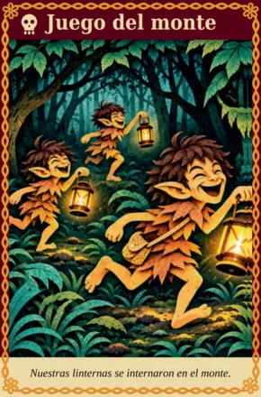
Huellas de cenizaSusurrosObjetos movidos
Juego del monte. Cada investigador se queda con una sola carta al azar; después, cacería a todos con 4 o menos
La maceta se rio cuando le di la espalda.
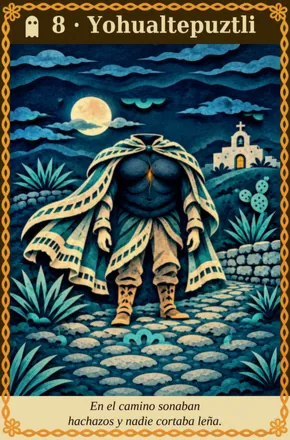

Bajo ceroObjetos movidosOlor a azufre
Hacha nocturna. Cacería a todos con 5 o menos; ni Esconderse ni Ruda sirven. Si alguien lo enfrenta con un Ultraje espiritual, le arranca el corazón y el Espanto se detiene para todos
En el camino sonaban hachazos y nadie cortaba leña.


Bajo ceroHuellas de cenizaLuces parpadeantes
Encrucijada. Dos cacerías seguidas a todos con 3 o menos
En el cruce nos esperaban cinco mujeres pálidas.

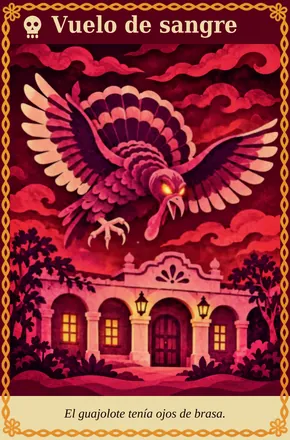
Luces parpadeantesMarcas en el espejoOlor a azufre
Vuelo de sangre. Caza al de menos cordura y salta al siguiente más débil, a todos los que tengan 5 o menos; solo lo detienen la Ruda o el Copal
Junto al fogón había un par de piernas sin dueña.
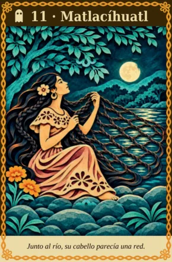
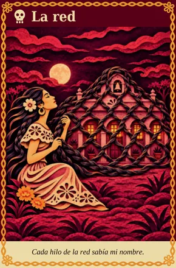
Bajo ceroHuellas de cenizaMarcas en el espejo
La red. Cacería a todos con 4 o menos; el Rosario no sirve
Junto al río, su cabello parecía una red.


Bajo ceroHuellas de cenizaOlor a azufre
Trato con el diablo. Todos descartan 1 carta al azar; después, cacería a todos con 4 o menos; el Ultraje no sirve
Me ofreció monedas sin bajarse del caballo.


Objetos movidosLuces parpadeantesMarcas en el espejo
Ronda nocturna. Cacería a todos con 5 o menos; Esconderse no sirve
Me arregló la sábana. Nadie la había llamado.
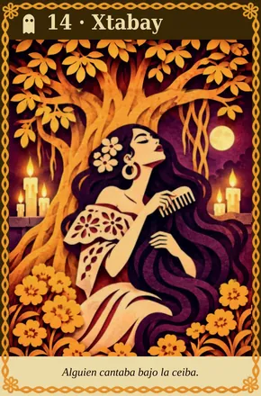

Huellas de cenizaSusurrosMarcas en el espejo
Canto de la ceiba. Cada investigador pierde 1 de cordura por cada investigador vivo; después, cacería a todos con 4 o menos
Alguien cantaba bajo la ceiba.
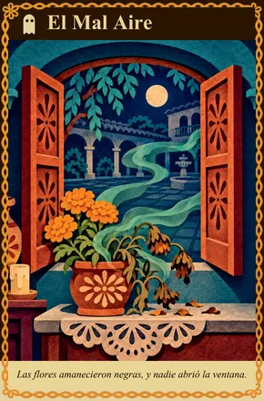

Bajo ceroLuces parpadeantesMarcas en el espejo
Soplo del mal viento. Cacería a todos con 3 o menos; solo salvan el Rosario, la Ruda y el Copal
Las flores amanecieron negras, y nadie abrió la ventana.
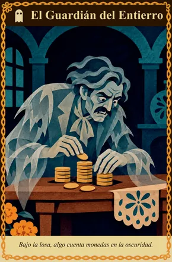
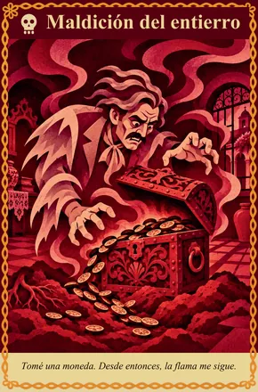
Bajo ceroSusurrosObjetos movidos
Maldición del entierro. Cada investigador elige: devuelve el oro (descarta 2 cartas) o se lo queda y será cazado sin importar su cordura; después, cacería a todos con 5 o menos
Bajo la losa, algo cuenta monedas en la oscuridad.

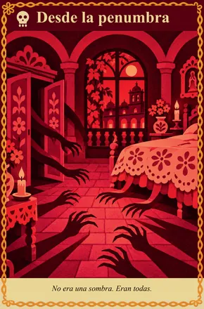
Huellas de cenizaObjetos movidosMarcas en el espejo
Desde la penumbra. Cacería a todos con 3 o menos; el de más cordura entre ellos es cazado dos veces (si hay empate, el ánima elige)
La puerta del ropero no estaba así cuando apagué la luz.
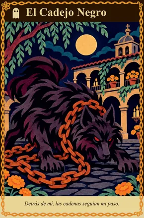
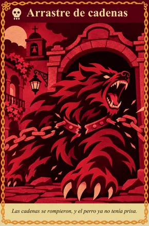
Huellas de cenizaLuces parpadeantesOlor a azufre
Arrastre de cadenas. Encadena al de menos cordura con el de más cordura; cacería a todos con 4 o menos; si uno muere, el otro también. En Duelo: sin cadenas, cacería con 5 o menos
Detrás de mí, las cadenas seguían mi paso.
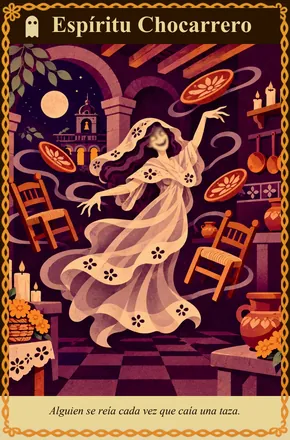
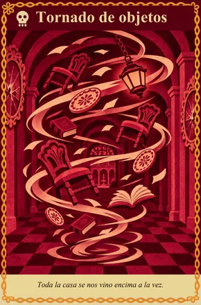
SusurrosObjetos movidosLuces parpadeantes
Tornado de objetos. Cada investigador pierde 1 de cordura por cada carta en su mano; después, cacería a todos con 5 o menos
Alguien se reía cada vez que caía una taza.

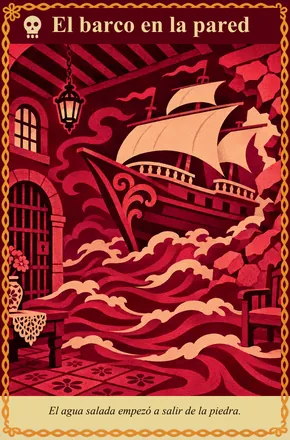
SusurrosMarcas en el espejoOlor a azufre
El barco en la pared. Cada investigador pasa su mano a la izquierda; después, cacería a todos con 5 o menos. En Duelo: cambia su mano por los últimos descartes y cacería con 4 o menos
En la pared de la celda quedó un barco, y nadie adentro.
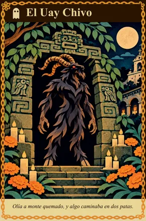

Bajo ceroSusurrosOlor a azufre
Mirada de cabra. El ánima elige a un investigador: solo podrá defenderse con el Rosario (otros pueden salvarlo con Copal); después, cacería a todos con 4 o menos
Olía a monte quemado, y algo caminaba en dos patas.
 Huellas de ceniza
Huellas de ceniza Olor a azufre
Olor a azufre